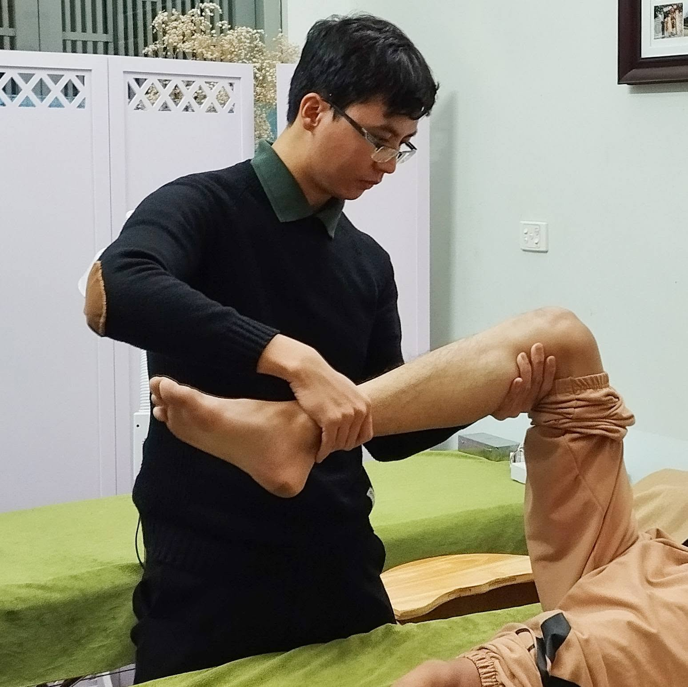
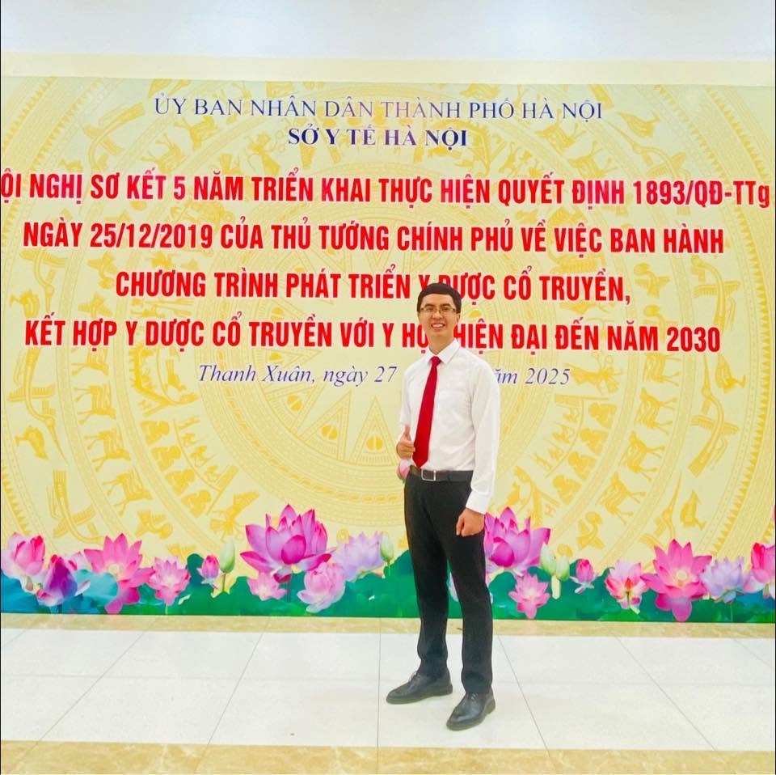

Blog
Y học thể thao & Y học cổ truyền trong bệnh lý cơ xương khớp
Ghi chép chuyên môn về xử trí chấn thương thể thao và bệnh lý cơ xương khớp: cập nhật bằng chứng từ các nghiên cứu mới, và vị trí của Y học cổ truyền — châm cứu, điện châm, xoa bóp bấm huyệt — bên cạnh vận động trị liệu và phục hồi chức năng. Bài viết mới sẽ tiếp tục được cập nhật tại đây.
Bài viết cá nhân
Ghi chép & chia sẻ chuyên môn

Chuột rút khi chạy bộ: Chuối hay tập tạ?
Nghiên cứu trên 98 vận động viên marathon cho thấy điều khác biệt không nằm ở nước hay điện giải.
Nổi bật
Điều trị đa mô thức trong Y học thể thao
Tổng quan bằng chứng khoa học về vị trí của châm cứu và Y học cổ truyền trong mô hình phục hồi chấn thương thể thao hiện đại.

Hội chứng dải chậu chày (ITBS)
Vì sao ITBS không phải hội chứng ma sát, và vì sao foam roller gần như không thể làm dài dải chậu chày.

Chuột rút khi vận động
Uống nhiều nước, ăn chuối hay bổ sung magie có thực sự ngăn được chuột rút? Những gì khoa học đã chứng minh.

Hiểu đúng về hội chứng quá tải thường gặp ở người chạy bộ
Nhận diện hội chứng quá tải thường gặp ở người chạy bộ, và vì sao điều chỉnh tải vận động quan trọng hơn nghỉ ngơi đơn thuần.

Đa nguyên trong điều trị đau cơ xương khớp
Vì sao chưa có phương pháp nào vượt trội cho mọi bệnh nhân đau cơ xương khớp, và hướng chọn chiến lược điều trị phù hợp với từng người.

Vai trò của vận động trong phục hồi bệnh nhân đau cột sống mạn tính
Vì sao vận động là biện pháp điều trị nền tảng của đau cột sống mạn tính, và cách phối hợp với các phương pháp giảm đau.

Xu hướng phát triển Y học cổ truyền trong giai đoạn mới
Ghi chép từ các chuyến công tác tại tuyến y tế cơ sở, và góc nhìn về định hướng kết hợp Y học cổ truyền với y học hiện đại.
Trên báo chí